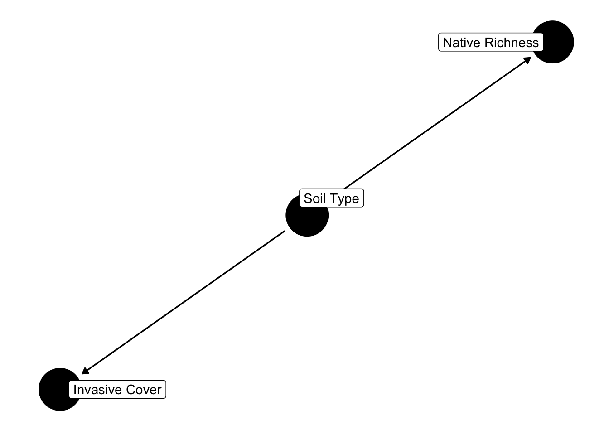
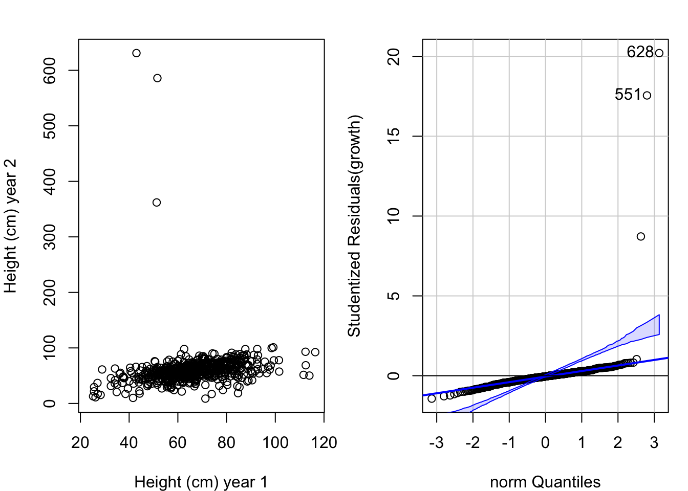

Chapter 2 Structural equation models
2.1 What are structural equation models?
Structural Equation Modeling (SEM) is a statistical technique that enables the modeling of complex causal relationships among variables. It extends regression by allowing:
- Simultaneous estimation of multiple equations
- Inclusion of both observed and latent (unmeasured) variables
- Specification of indirect effects and feedback loops
- Assessment of model fit against observed data
SEM is often visualized as a path diagram, where arrows represent hypothesized relationships between variables.
2.1.1 When Should You Use SEM?
Use SEM when:
- You have multiple dependent variables that may influence one another
- You want to estimate direct and indirect effects between variables
- You need to account for measurement error in survey or ecological constructs
- You are testing a theory or conceptual model with multiple pathways
- Your system includes latent constructs like “habitat quality” or “disturbance pressure” inferred from several indicators
SEM is ideal when a single regression model is too simplistic to capture the interdependent relationships in your system.
2.1.2 How is SEM Different from Multiple Regression?
| Feature | Multiple Regression | SEM |
|---|---|---|
| Number of equations | One | Many simultaneously |
| Latent variables | ❌ Not allowed | ✅ Allowed |
| Indirect effects | ❌ Manual calculation | ✅ Modeled explicitly |
| Measurement error (in predictors) | ❌ Ignored | ✅ Can be modeled |
| Model fit assessment | R², AIC, etc. | Chi-square test, RMSEA, CFI, TLI, etc. |
In multiple regression, you can only estimate one equation at a time, with no ability to model feedback loops or measurement error. In contrast, SEM treats your whole system as a network, testing how well your full model fits the data.
2.1.3 Summary
SEM is a flexible and powerful framework for:
- Exploring and testing theoretical models
- Modeling complex causal chains
- Incorporating unobservable constructs
It provides more rigorous insights into systems where variables are interdependent, influenced by hidden factors, and subject to error.
2.2 Anatomy of a Structural Equation Model
Structural Equation Modeling (SEM) provides a flexible framework for representing complex causal relationships between variables. In this chapter, we break down the structure of an SEM into its key components.
2.2.1 Types of Variables
SEM uses two main types of variables:
- Observed variables: Directly measured values (e.g., soil nitrogen, species richness).
- Latent variables: Not directly observed, but inferred from multiple observed indicators
(e.g., a latent “Disturbance Pressure” factor inferred from road density, fire frequency, and grazing).
Each variable also plays one of two roles in the model:
| Variable Role | Description |
|---|---|
| Exogenous | Predictor variables not explained by any other variables in the model. |
| Endogenous | Response variables influenced by one or more other variables in the model. |
Note: Endogenous variables can act as both outcomes and predictors of other endogenous variables.
2.2.2 Path Diagrams
Path diagrams are a central feature of SEM. They visually represent the hypothesized relationships between variables using arrows:
- Single-headed arrows (→) represent causal/predictive paths
- Double-headed arrows (↔︎) represent covariances (associations not assumed to be causal)
2.3 Building Multivariate Models
2.3.1 What is Causality?
Causality refers to understanding the directional effect one variable has on another. In SEM, causal relationships are explicitly modeled, unlike in multiple regression where they may be implied but not specified.
Judea Pearl’s Ladder of Causation is a framework for understanding levels of causal reasoning:
1. Observation — associational reasoning (“what is”)
2. Intervention — action-based reasoning (“what if I do”)
3. Counterfactuals — imagining alternate realities (“what if I had done”)We ascend the ladder by incorporating more assumptions and a model of the system.
2.3.2 Why move beyond Multiple Regression?
Multiple regression models:
• Estimate associations while “controlling for” other variables
• Assume independence among predictors
• Do not explicitly encode causal structureCausal models (via SEM):
• Represent direction and strength of causal pathways
• Account for mediators, confounders, and latent variables
• Enable testing of hypotheses about mechanisms2.3.3 Meta-Modeling Your System
Before diving into data, build a conceptual model:
1. Define your research Purpose:
• Discovery: Are you exploring patterns or relationships for the first time?
• Hypothesis Testing: Are you evaluating a specific theoretical prediction?
‚Ä¢ Prediction: Are you aiming to forecast outcomes under new conditions?üîç Tip: Discovery-based models might be more flexible or exploratory, while hypothesis testing demands tighter causal logic and pre-specified relationships.
2. Identify the Focus:What role do your variables play in the system?:
• Drivers: Variables that initiate causal change (e.g., treatments, environmental context).
• Responses: Outcome variables (e.g., pollinator abundance).
• Mediators: Variables that transmit effects from causes to outcomes (e.g., plant cover).
‚Ä¢ Theory Testing: Are you evaluating a known causal pathway or testing a novel ecological hypothesis?ü߆ Make sure the pieces of your model are causal! Avoid throwing in all your variables just because you measured them ‚Äî each should have a theorized role.
3. Determine Span of Inference:Are your findings meant to be context-specific or to inform broader generalizations?:
• Local/System-Specific: Targeted insights for a particular site or management action.
‚Ä¢ Generalizable Process: Testing broad ecological principles or multi-site patterns.üìè This choice influences how you frame your model structure and what covariates (like ‚Äúsite‚Äù) you might treat as fixed or random.
2.4 From Concept to Model
Once your meta-model is constructed:
• Reify with data availability in mind
• Ensure your DAG closes appropriate backdoors
• Align structure with your research purpose“Make sure the pieces of your model are causal!”
2.5 Common Structures in Causal Diagrams
In structural equation modeling (SEM) and causal inference, understanding the basic building blocks of causal diagrams is crucial. These structures form the foundation for determining what to control for and what to avoid controlling for. Below are the most common structures you’ll encounter in Directed Acyclic Graphs (DAGs), with brief explanations and examples.
2.5.1 Chains (Mediation Paths)
Structure:
Cause → Mediator → Effect
Interpretation:
• The mediator is an intermediate variable through which the cause affects the effect.
• If you control for the mediator, you block the indirect path, potentially underestimating the total effect of the cause.Example:
Fire frequency → Canopy cover → Soil moisture • If you control for canopy cover, you might miss the full effect that fire frequency has on soil moisture via changes in canopy cover.
Visual:
library(dagitty)
library(ggdag)
dag <- dagify(
SoilMoisture ~ CanopyCover,
CanopyCover ~ Fire,
labels = c(Fire = "Fire Frequency", CanopyCover = "Canopy Cover", SoilMoisture = "Soil Moisture"),
exposure = "Fire", outcome = "SoilMoisture"
)
ggdag(dag, text = FALSE, use_labels = "label") + theme_dag()
2.5.2 Colliders
Structure:
Cause1 → Collider ← Cause2
Interpretation:
• A collider is a variable that is influenced by two (or more) variables.
• Controlling for the collider opens a path between the two causes, creating spurious associations where none may exist.Example:
Soil nitrogen → Plant growth ← Pathogen load • Both soil nitrogen and pathogen load affect plant growth. If you control for plant growth (the collider), it might look like soil nitrogen and pathogens are correlated—even if they’re not.
Visual:
dag <- dagify(
PlantGrowth ~ SoilNitrogen + PathogenLoad,
labels = c(SoilNitrogen = "Soil N", PathogenLoad = "Pathogens", PlantGrowth = "Plant Growth"),
exposure = "SoilNitrogen", outcome = "PathogenLoad"
)
ggdag(dag, text = FALSE, use_labels = "label") + theme_dag()
2.5.3 Forks (Confounding Paths)
Structure:
CommonCause → Cause, CommonCause → Effect
Interpretation:
• This is a confounding structure, where the common cause explains the observed correlation between two variables.
• Controlling for the common cause blocks the backdoor path, helping isolate the causal effect.Example:
Soil type → Invasive species cover Soil type → Native species richness • If you don’t control for soil type, you may falsely conclude that invasive cover affects native richness, when both are simply driven by the soil.
Visual:
dag <- dagify(
InvasiveCover ~ SoilType,
NativeRichness ~ SoilType,
labels = c(SoilType = "Soil Type", InvasiveCover = "Invasive Cover", NativeRichness = "Native Richness"),
exposure = "InvasiveCover", outcome = "NativeRichness"
)
ggdag(dag, text = FALSE, use_labels = "label") + theme_dag()
2.5.4 Descendants of Colliders
Key Point:
• Controlling for descendants of colliders can also open spurious paths.Example:
Imagine you control for a variable like Plant biomass, which is a descendant of a collider (e.g., Herbivory ← Plant defense → Biomass). This can reintroduce bias just like controlling for the collider itself.
2.5.5 Summary of strcutures
Structure Do You Control For It? Why? Chain (mediator) ❌ (if estimating total effect) Controls block indirect paths Collider ❌ Conditioning opens spurious paths Fork (common cause) ✅ Controls block confounding Descendant of Collider ❌ Opens collider paths indirectly
Understanding these structures helps you build better SEMs, choose correct adjustment sets, and avoid introducing bias into your models.
2.5.6 Identifying Causality
You don’t need to know all mechanisms to make causal claims. But you do need to:
• Map the system (e.g., using DAGs)
• Identify and control for confounders
• Avoid controlling for mediators2.5.7 Backdoor Criterion
To estimate a causal effect of X → Y, block all backdoor paths (those that flow into X) by conditioning on appropriate variables not affected by X.
2.5.8 Frontdoor Criterion
Useful when you can’t block all backdoor paths. Identify a mediator that:
• Is affected by X
• Affects Y
• Is not affected by any confounders of X and Y2.5.9 Build your own DAG: SEM Case Study on Pollinator Impacts of Vegetation Management
This research project explores how different Integrated Vegetation Management (IVM) treatments conducted by Arizona Public Service (APS) on powerline rights-of-way (ROWs) affect pollinator communities, using Structural Equation Modeling (SEM) to untangle direct and indirect effects.
2.5.9.1 Study Context
APS manages vegetation beneath powerlines for safety and access, using a mix of:
• Mechanical removal
• Herbicide application
• Combined Mechanical + Herbicide
• Untreated (Control) plotsUnderstanding how these treatments influence floral resources is key to predicting changes in pollinator abundance and diversity.
2.5.9.2 Data Collection
At 3 sites, treatments were applied in a randomized block design across plots categorized as:
• Control
• Herbicide
• Mechanical
• Mechanical + HerbicideResearchers want to test whether management effects on pollinators are mediated through floral resources, or whether there are residual (direct) effects of treatment type beyond vegetation structure.
2.5.9.3 Key Variables and Their Roles
Exogenous (Independent) Variables:
• Treatment (main predictor—e.g., herbicide, mowing)
• Soil substrate (moderator/stratifier of treatment effects)
• Cattle presence (a confounder—not caused by treatment)Plant Community Mediators:
• Plant richness
• Plant cover
• Plant height
• Ceanothus presence/abundance
• Woody debrisPollinator Response Variables:
• Pollinator abundance
• Pollinator richnesslibrary(dagitty)
library(ggdag)
library(tidyverse)
# Define the DAG
ivm_dag <- dagitty("
dag {
Treatment
Soil_Substrate
Cattle
Plant_Richness
Plant_Cover
Plant_Height
Ceanothus
Woody_Debris
Pollinator_Richness
Pollinator_Abundance
Treatment -> Plant_Richness
Treatment -> Plant_Cover
Treatment -> Plant_Height
Treatment -> Ceanothus
Treatment -> Woody_Debris
Soil_Substrate -> Treatment
Soil_Substrate -> Plant_Richness
Soil_Substrate -> Plant_Cover
Soil_Substrate -> Woody_Debris
Cattle -> Plant_Richness
Cattle -> Plant_Cover
Cattle -> Pollinator_Abundance
Cattle -> Pollinator_Richness
Plant_Richness -> Pollinator_Richness
Plant_Richness -> Pollinator_Abundance
Plant_Cover -> Pollinator_Richness
Plant_Cover -> Pollinator_Abundance
Plant_Height -> Pollinator_Richness
Plant_Height -> Pollinator_Abundance
Ceanothus -> Pollinator_Richness
Ceanothus -> Pollinator_Abundance
Woody_Debris -> Pollinator_Richness
Woody_Debris -> Pollinator_Abundance
}
")
node_roles <- tibble(
name = c(
"Treatment",
"Soil_Substrate",
"Cattle",
"Plant_Richness",
"Plant_Cover",
"Plant_Height",
"Ceanothus",
"Woody_Debris",
"Pollinator_Richness",
"Pollinator_Abundance"
),
role = c(
"Treatment",
"Context",
"Context",
"Plant",
"Plant",
"Plant",
"Plant",
"Plant",
"Pollinator",
"Pollinator"
)
)
# Get layout and merge roles
dag_df <- tidy_dagitty(ivm_dag, layout = "nicely") %>%
left_join(node_roles, by = "name")
# Plot using ggplot2 with corrected edge structure
ggplot() +
geom_segment(
data = dag_df %>% filter(!is.na(xend)),
aes(x = x, y = y, xend = xend, yend = yend),
arrow = arrow(length = unit(0.02, "npc")),
color = "grey40"
) +
geom_point(
data = dag_df %>% filter(!is.na(x)),
aes(x = x, y = y, color = role),
size = 8, alpha = 0.85
) +
geom_text(
data = dag_df %>% filter(!is.na(x)),
aes(x = x, y = y, label = name),
color = "black", size = 4
) +
scale_color_manual(values = c(
"Treatment" = "#FB7E21FF",
"Context" = "#A91601FF",
"Plant" = "#18DDC2FF",
"Pollinator" = "#00468BFF"
)) +
labs(
title = "Hypothesized DAG for Pollinator Response to IVM Treatment",
color = "Variable Type"
) +
theme_void()
2.5.10 Adjustment Sets
An adjustment set is a group of variables you control for (include as covariates) in order to estimate the causal effect of one variable (say, Treatment) on another (say, Pollinator_Richness) without bias.
In short, it blocks backdoor paths — those sneaky alternative routes through which spurious associations can travel.
To find variables to condition on:
## { Soil_Substrate }## { Soil_Substrate }Interpretation:
To estimate the total causal effect of Treatment on Pollinator_Richness, you only need to adjust for Soil_Substrate.
This means:
• Soil_Substrate is a backdoor variable — it opens a non-causal path because it influences both Treatment and plant variables that, in turn, influence pollinators.
• Controlling for Soil_Substrate blocks that spurious path and gives you an unbiased estimate of the effect of Treatment.Do not control for:
• Mediators, like Plant_Richness, Plant_Cover, or Woody_Debris, if you want the total effect of treatment.
• Colliders, such as anything caused by both Treatment and another variable (you don’t have a clear collider in this DAG, but good to keep in mind).Example in a model:
• model <- lm(Pollinator_Richness ~ Treatment + Soil_Substrate, data = your_data)GREG HERE YOU NEED TO CREATE YOUR FINAL DATASET BY SUMMARIZING THE VEG DATA AND ADDING YOUR POLLINATOR DATA PER PLOT. THEN WE CAN ADJUST THE CODE BELOW TO TEST WHETHER YOU REPLICATION / DATA ARE OK AND THEN MOVE ONTO NEXT STEPS
2.6 Chapter 5: Covariance-Based Estimation in SEM
2.6.1 What is Covariance-Based SEM?
Structural Equation Modeling (SEM) using covariance-based maximum likelihood estimation fits parameters so that the model-implied covariance matrix matches the observed covariance matrix as closely as possible. Unlike individual regression models:
- SEM accounts for how estimation of one parameter affects others.
- SEM allows for modeling feedbacks and latent variables.
- SEM is based on maximum likelihood estimation (MLE).
2.6.2 Maximum Likelihood Estimation
In SEM, MLE identifies parameters that maximize the likelihood of observing the data, given the model. This involves:
- Exploring the parameter space iteratively.
- Estimating model fit using a fitting function like ML.
- Computationally intensive with more parameters.
2.6.3 Assumptions Behind ML Estimation
- Multivariate normality (use
mvnormtest::mshapiro.test())
# Simulate multivariate normal data
set.seed(123)
data <- data.frame(
x1 = rnorm(100),
x2 = rnorm(100),
x3 = rnorm(100)
)
# Use mshapiro.test from mvnormtest
mshapiro.test(t(data)) # Note the transpose!##
## Shapiro-Wilk normality test
##
## data: Z
## W = 0.97635, p-value = 0.0689- No severe skew or missing data
- No redundant variables (covariance matrix must be positive definite)
## vars n mean sd median trimmed mad min max range skew kurtosis se
## x1 1 100 0.09 0.91 0.06 0.08 0.89 -2.31 2.19 4.50 0.06 -0.22 0.09
## x2 2 100 -0.11 0.97 -0.23 -0.17 0.97 -2.05 3.24 5.29 0.63 0.58 0.10
## x3 3 100 0.12 0.95 0.04 0.09 0.91 -1.76 2.29 4.05 0.32 -0.59 0.09## x1 x2 x3
## Mode :logical Mode :logical Mode :logical
## FALSE:100 FALSE:100 FALSE:100- Sufficient sample size relative to parameters
# Count parameters in a simple lavaan model
model <- '
y1 ~ x1 + x2
y2 ~ y1
'
# Simulate data
data <- data.frame(x1 = rnorm(100), x2 = rnorm(100), y1 = rnorm(100), y2 = rnorm(100))
# Estimate number of parameters
fit <- sem(model, data = data)
summary(fit)## lavaan 0.6-19 ended normally after 1 iteration
##
## Estimator ML
## Optimization method NLMINB
## Number of model parameters 5
##
## Number of observations 100
##
## Model Test User Model:
##
## Test statistic 0.497
## Degrees of freedom 2
## P-value (Chi-square) 0.780
##
## Parameter Estimates:
##
## Standard errors Standard
## Information Expected
## Information saturated (h1) model Structured
##
## Regressions:
## Estimate Std.Err z-value P(>|z|)
## y1 ~
## x1 -0.078 0.088 -0.882 0.378
## x2 0.194 0.092 2.103 0.036
## y2 ~
## y1 -0.071 0.109 -0.648 0.517
##
## Variances:
## Estimate Std.Err z-value P(>|z|)
## .y1 0.829 0.117 7.071 0.000
## .y2 1.042 0.147 7.071 0.000# Count parameters
n_params <- lavInspect(fit, "npar")
n_obs <- nrow(data)
# Portnoy’s Rule
portnoy_value <- n_params^(3/2) / n_obs
portnoy_value # Should be close to 0## [1] 0.11180342.6.4 Identifiability
Before fitting a SEM, you must ensure it is identified — meaning you have enough unique information to estimate all model parameters.
2.6.4.1 Key Rules
- T-rule: Number of parameters ≤ unique entries in covariance matrix.
# Number of unique observed covariances
p <- ncol(data)
n_cov <- p * (p + 1) / 2
# Compare to number of free parameters
n_cov## [1] 10## [1] 5- Order condition: For each endogenous variable, incoming paths ≤ connected variables.
There’s no direct test — but: • Draw your DAG. • Count how many arrows go into each endogenous variable. • Make sure that number ≤ number of variables related to it.
Rank condition: Variables in feedback loops must be influenced by different causes.
• For feedback loops: ensure that each variable has at least one unique exogenous predictor. • Use DAG tools (ggdag or dagitty) to visualize and confirm.
If these rules are violated, the model is underidentified and cannot be estimated.
2.6.5 Degrees of Freedom
- DF = number of observed variances/covariances – number of estimated parameters
- Just-identified models (DF = 0): Can’t test fit
- Overidentified models (DF > 0): Preferred — allows model fit evaluation
library(lavaan)
# define model as a lavaan-style string
model <- '
cover ~ age + elev
firesev ~ age + cover
'
fit <- sem(model, data = keeley)
fitMeasures(fit, c("chisq", "df", "pvalue", "cfi", "rmsea"))## chisq df pvalue cfi rmsea
## 0.900 1.000 0.343 1.000 0.0002.6.6 Sample Size Considerations
A model’s complexity is limited by your sample size:
- Rule of thumb: ≥ 5 observations per estimated parameter
- Preferably: ≥ 20 observations per parameter
- Use Portnoy’s rule: ρ3/2 / n → 0
Account for:
- Exogenous variable variances/covariances (often directly estimated from data)
- Endogenous variable error variances (often derived, not estimated directly)
2.7 Getting Started with lavaan – Model Specification, Estimation, and Interpretation
Setting Up
Before you begin, make sure the lavaan and lavaanPlot packages are installed:
What is lavaan?
• lavaan stands for Latent Variable Analysis.
• Developed by Yves Rosseel (2010).
• Syntax is similar to regression in R using formulas.
• It supports latent and observed variables, covariance-based SEM, mediation, path analysis, and more.Example: Post-Fire Plant Recovery
We’ll analyze a dataset from Keeley et al. (2006) studying how stand age, fire severity, and other factors affect plant cover.
Step 1: Start Simple – A Regression as SEM
# Load dataset
# Example: keeley <- read.csv("path/to/your/keeley_data.csv")
# Fit SEM
#model1 <- 'cover ~ age'
#fit1 <- sem(model1, data = keeley)
#summary(fit1, standardized = TRUE, rsquare = TRUE)Intercepts and Mean Structures
To explicitly estimate intercepts:
Viewing the Model
Standardized Estimates
standardizedSolution(fit1)
This gives standardized coefficients and helps compare the relative strength of predictors.
Mediation Example: Indirect Effects
#model2 <- '
# firesev ~ age
# cover ~ firesev + age
#'
#fit2 <- sem(model2, data = keeley)
#summary(fit2, standardized = TRUE, rsquare = TRUE)Direct, Indirect, and Total Effects
#model3 <- '
# firesev ~ af*age
# cover ~ fc*firesev + ac*age
# Derived
# indirect := af * fc
# total := ac + (af * fc)
#'
#fit3 <- sem(model3, data = keeley)
#standardizedSolution(fit3)Warnings: Variance Scaling
If you get a warning about variances differing by orders of magnitude, consider rescaling your variables or using standardized solutions.
Visualizing Complex Models
#lavaanPlot(
# model = fit3,
# coefs = TRUE,
# stand = TRUE,
# sig = 0.05,
# graph_options = list(layout = "circo")
#)Final Exercise Prompt
Try fitting the following model:
#model_final <- '
# rich ~ distance + abiotic + hetero
# hetero ~ distance
# abiotic ~ distance
# abiotic ~~ hetero
#'
#fit_final <- sem(model_final, data = keeley)
#summary(fit_final, standardized = TRUE)2.7.1 Chapter 7:Assessing Fit and Normality
Overview
In this tutorial, we learn how to evaluate model fit and test for normality, key assumptions in covariance-based SEM. We’ll cover:
• Standard fit indices (e.g., RMSEA, CFI)
• Residuals and modification indices
• Normality diagnostics
• Remedies for assumption violationsExample: Fully Mediated SEM
#model_full <- '
# firesev ~ age
# cover ~ firesev
#'
#fit_full <- sem(model_full, data = keeley, meanstructure = TRUE)
#summary(fit_full, fit.measures = TRUE)Interpretation:
• Chi-square (p > 0.05) → Model is not significantly different from the observed data.
• Check additional fit indices: RMSEA, CFI, SRMR, AIC, BIC.Fit Indices (Kline 2023 Recommendations)
Fit Measure Interpretation Chi-square test Prefer p > 0.05 RMSEA 90% CI lower bound < 0.05 CFI > 0.90 SRMR < 0.10
Diagnosing Misfit with Residuals
#residuals(fit_full, type = "cor") # residual correlations
#modificationIndices(fit_full, standardized = FALSE, sort. = TRUE)• Large residuals or modification indices > 3.84 suggest misfit.
• Inspect residual correlation between rich and distance.Testing Normality of Residuals
library(MVN)
# Step 1: Get residuals from lavaan model
#resids <- lavPredict(fit_full, type = "ov") # residuals for observed variables
# Optional: check univariate normality visually
#apply(resids[, 1:2], 2, function(x) {
# qqnorm(x); qqline(x)
#})
# Step 2: Multivariate Shapiro-Wilk (for n ≤ 50)
#mshapiro.test(t(resids[, 1:2]))
# Step 3: Mardia's test for multivariate normality
#MVN::mvn(data = resids[, 1:2], mvn_test = "mardia")
# Step 1: Get residuals from lavaan model
#tryCatch({
# resids <- lavPredict(fit_full, type = "ov")
# Make sure residuals are numeric and have no missing values
# if (!is.null(resids) && is.matrix(resids) && all(is.finite(resids[, 1:2]))) {
# Step 2: Multivariate Shapiro-Wilk (for n ≤ 50)
# print(mshapiro.test(t(resids[, 1:2])))
# Step 3: Mardia's test
# print(MVN::mvn(data = resids[, 1:2], mvn_test = "mardia"))
# } else {
# message("Residuals are missing, not numeric, or contain NA/Inf values.")
# }
#}, error = function(e) {
# message("MVN test failed: ", conditionMessage(e))
#})⸻
If Assumptions Are Violated…
Option 1: Satorra-Bentler Correction
Option 2: Bollen-Stine Bootstrap
#fit_bs <- sem(model_full, data = keeley, test = "bollen.stine", se = "boot", bootstrap = 1000)
#summary(fit_bs)Summary:
• Use fit indices and residuals to assess model performance.
• Check assumptions of normality; consider corrections if violated.
• Explore modification indices to identify potential improvements.2.7.2 Chapter 8: Comparing Models and Testing Mediation
This section introduces two major approaches for comparing SEM models: • Likelihood Ratio Tests (LRTs) for nested models. • Information Criteria (e.g., AIC, AICc) for both nested and non-nested models.
We also explore mediation, which refers to how a relationship between two variables is explained by one or more intervening variables.
# Load required libraries
library(lavaan)
library(AICcmodavg)
# Fully Mediated Model
fullMedModel <- '
firesev ~ age
cover ~ firesev
'
fullMedSEM <- sem(fullMedModel, data = keeley)
# Partially Mediated Model
partialMedModel <- '
firesev ~ age
cover ~ firesev + age
'
partialMedSEM <- sem(partialMedModel, data = keeley)
# Likelihood Ratio Test (nested models)
anova(partialMedSEM, fullMedSEM)##
## Chi-Squared Difference Test
##
## Df AIC BIC Chisq Chisq diff RMSEA Df diff Pr(>Chisq)
## partialMedSEM 0 359.4 371.9 0.0000
## fullMedSEM 1 360.7 370.7 3.2974 3.2974 0.15977 1 0.06939 .
## ---
## Signif. codes: 0 '***' 0.001 '**' 0.01 '*' 0.05 '.' 0.1 ' ' 1Interpretation: A non-significant LRT suggests that the simpler (fully mediated) model fits the data about as well as the more complex model.
AIC-Based Model Comparison
# AICc model comparison
aictab(
cand.set = list(fullMedSEM, partialMedSEM),
modnames = c("Full", "Partial")
)##
## Model selection based on AICc:
##
## K AICc Delta_AICc AICcWt Cum.Wt LL
## Partial 5 360.11 0.00 0.63 0.63 -174.70
## Full 4 361.17 1.05 0.37 1.00 -176.35Interpretation: Models within 2 ΔAICc units are considered roughly equivalent. Higher AIC weight (AICcWt) indicates stronger support for that model.
Additional Example: Distance and Species Richness
Key Takeaways:
• Use LRT for nested models; lower chi-square and higher p-value = simpler model may suffice.
• Use AICc for broader comparisons; lower AICc and higher weight = better.
• Mediation is central to SEM and can be tested with both approaches.
• Fully vs. Partially Mediated models differ by whether direct paths bypass mediators.2.7.3 Chapter 8: Latent Variables as Drivers
What is a Latent Variable?
Latent variables are unobserved constructs that we infer from multiple observed indicators. They represent abstract concepts like intelligence, disturbance, or biodiversity.
• In SEM, latent variables are drawn as circles.
• Observed indicators are squares or rectangles.
• Latent variables are typically estimated through Confirmatory Factor Analysis (CFA).Confirmatory Factor Analysis (CFA)
CFA allows you to test whether certain observed variables co-vary in ways consistent with an underlying theoretical construct.
Example: Aposematism in Poison Frogs
# Sample covariance matrix from Santos & Cannatella (2011)
# santosCov <- read.table("https://raw.githubusercontent.com/username/santosCov.txt", na.strings = #".")
#santosCov <- as.matrix(santosCov)
# Create covariance matrix manually (example values)
santosCov <- matrix(c(
1.00, 0.45, 0.38,
0.45, 1.00, 0.50,
0.38, 0.50, 1.00
), nrow = 3, byrow = TRUE)
# Add row and column names (must match your CFA model exactly)
colnames(santosCov) <- rownames(santosCov) <- c("Alkaloid.quantity", "Alkaloid.diversity", "Conspicuous.coloration")
# Specify CFA model
santosCFA1 <- '
Aposematism =~ Alkaloid.quantity + Alkaloid.diversity + Conspicuous.coloration
'
# Fit the model
santosFit1 <- sem(santosCFA1, sample.cov = santosCov, sample.nobs = 21)
summary(santosFit1, standardized = TRUE)## lavaan 0.6-19 ended normally after 23 iterations
##
## Estimator ML
## Optimization method NLMINB
## Number of model parameters 6
##
## Number of observations 21
##
## Model Test User Model:
##
## Test statistic 0.000
## Degrees of freedom 0
##
## Parameter Estimates:
##
## Standard errors Standard
## Information Expected
## Information saturated (h1) model Structured
##
## Latent Variables:
## Estimate Std.Err z-value P(>|z|) Std.lv Std.all
## Aposematism =~
## Alkaloid.qntty 1.000 0.571 0.585
## Alkalod.dvrsty 1.316 0.714 1.842 0.065 0.751 0.769
## Conspics.clrtn 1.111 0.572 1.943 0.052 0.634 0.650
##
## Variances:
## Estimate Std.Err z-value P(>|z|) Std.lv Std.all
## .Alkaloid.qntty 0.627 0.249 2.514 0.012 0.627 0.658
## .Alkalod.dvrsty 0.388 0.298 1.305 0.192 0.388 0.408
## .Conspics.clrtn 0.550 0.258 2.133 0.033 0.550 0.578
## Aposematism 0.326 0.272 1.199 0.230 1.000 1.000Why Use Latent Variables?
• Increase accuracy by pooling information across multiple imperfect indicators.
• Reduce measurement error.
• Enable modeling of unobservable constructs.Identification Rules (How to Know Your Model Can Be Estimated):
1. T-Rule: Number of estimated parameters ≤ number of unique elements in the covariance matrix.
2. Three-indicator rule: Each latent variable has ≥ 3 uncorrelated indicators → SUFFICIENT.
3. Two-indicator rule: Works for multiple latent variables if indicators don’t share variance → SUFFICIENT.
4. Fixing scale:
• Set variance of latent = 1.0, or
• Set one loading to 1.0 to put latent on that indicator’s scale.Models with 2 indicators and shared error may be underidentified.
Fit a Second Latent Variable: Body Size
#santosSize <- '
# Size =~ Log.Mass + Log.RMR + Log.Scope
#'
#santosSizeFit <- sem(santosSize, sample.cov = santosCov, sample.nobs = 21)
#summary(santosSizeFit, standardized = TRUE)Combine Latent Variables
You can model multiple latent variables and test how they relate to each other.
#santosCFA2 <- '
# Aposematism =~ Alkaloid.quantity + Alkaloid.diversity + Conspicuous.coloration + #Ant.Mite.Specialization + log.Prey
# Scale =~ Log.Mass + Log.RMR + Log.Scope + Conspicuous.coloration
#'
#santosFit2 <- sem(santosCFA2, sample.cov = santosCov, sample.nobs = 21)
#summary(santosFit2, standardized = TRUE)Summary:
• Latent variables allow you to estimate unobservable concepts.
• CFA is the method used to define latent variables in SEM.
• Identification is critical—use the rules to check if your model can be estimated.
• Measurement error is reduced by leveraging multiple indicators.2.7.4 Chapter 10: Latent Responses and Measurement Error
Overview
In this section, we explore how latent variables can be modeled as responses and how to account for measurement error in observed indicators.
Latent variables are constructs that cannot be measured directly (e.g., biodiversity, ecosystem health, intelligence), but are inferred from multiple observed indicators.
Key Concepts
Latent Variables as Responses
Latent variables can be endogenous (influenced by other variables in the model). For instance:
• A latent construct such as “Habitat Quality” could be influenced by soil moisture, disturbance, and vegetation cover.
• Each latent construct is defined by observed indicators, which are imperfect and contain measurement error.Measurement Error
SEM is powerful because it separates true score variance from error variance. Each observed variable has two components: • The true score linked to the latent construct. • The error term (random noise or instrument error).
Accounting for measurement error prevents biased parameter estimates and inflated correlations.
Example: Latent Response Model with Measurement Error
We model a latent response Performance, influenced by an observed predictor Treatment, and measured via three indicators: perf1, perf2, perf3.
# Define the SEM
model <- '
# Measurement model
Performance =~ perf1 + perf2 + perf3
# Structural model
Performance ~ Treatment
'
# Simulate data
set.seed(123)
n <- 200
Treatment <- rnorm(n)
perf1 <- 0.6*Treatment + rnorm(n, sd = 1)
perf2 <- 0.6*Treatment + rnorm(n, sd = 1)
perf3 <- 0.6*Treatment + rnorm(n, sd = 1)
data <- data.frame(Treatment, perf1, perf2, perf3)
# Fit the SEM
fit <- sem(model, data = data)
summary(fit, standardized = TRUE)## lavaan 0.6-19 ended normally after 22 iterations
##
## Estimator ML
## Optimization method NLMINB
## Number of model parameters 7
##
## Number of observations 200
##
## Model Test User Model:
##
## Test statistic 1.871
## Degrees of freedom 2
## P-value (Chi-square) 0.392
##
## Parameter Estimates:
##
## Standard errors Standard
## Information Expected
## Information saturated (h1) model Structured
##
## Latent Variables:
## Estimate Std.Err z-value P(>|z|) Std.lv Std.all
## Performance =~
## perf1 1.000 0.552 0.489
## perf2 0.995 0.180 5.522 0.000 0.549 0.499
## perf3 0.968 0.183 5.288 0.000 0.535 0.467
##
## Regressions:
## Estimate Std.Err z-value P(>|z|) Std.lv Std.all
## Performance ~
## Treatment 0.570 0.075 7.642 0.000 1.032 0.971
##
## Variances:
## Estimate Std.Err z-value P(>|z|) Std.lv Std.all
## .perf1 0.969 0.106 9.135 0.000 0.969 0.761
## .perf2 0.910 0.100 9.058 0.000 0.910 0.751
## .perf3 1.024 0.110 9.289 0.000 1.024 0.782
## .Performance 0.017 0.042 0.410 0.682 0.056 0.056Visualizing the SEM

Why Model Latent Responses?
• More reliable constructs by combining multiple indicators.
• Reduces noise from any single observed variable.
• Better reflects theoretical constructs (e.g., stress, biodiversity).Key Assumptions
• Indicators are unidimensional (reflect one latent factor).
• Measurement errors are uncorrelated.
• Sufficient variation and correlation among indicators.Takeaway
Modeling latent responses allows you to capture complex, unobserved constructs while accounting for error in measurements. SEM enables estimation of both the relationships among constructs and their measurement structure.
2.7.5 Chapter 11: Local Estimation and D-Separation
Overview
This chapter introduces local (piecewise) SEM — an approach that decomposes a full SEM into a series of local linear models. It contrasts with global covariance-based SEM in both assumptions and evaluation.
Why Use Piecewise SEM?
Covariance SEM Piecewise SEM Requires multivariate normality Robust to non-normal data Models all paths simultaneously Fits multiple linear models separately Fit assessed globally (χ², RMSEA) Fit assessed via D-separation tests Difficult with small N More flexible with limited sample size
Example: Breaking SEM Into Local Regressions
## [1] "%~~%" "AIC_psem" "as.psem" "basisSet" "cerror" "coefs"
## [7] "dSep" "evaluateClasses" "fisherC" "getCoefficients" "getDAG" "getSortedPsem"
## [13] "keeley" "LLchisq" "meadows" "multigroup" "partialCorr" "partialResid"
## [19] "psem" "rsquared" "shipley" "stdCoefs" "unstdCoefs"# Simulate data
set.seed(123)
n <- 100
x <- rnorm(n)
y2 <- 0.5 * x + rnorm(n)
y1 <- 0.6 * x + 0.4 * y2 + rnorm(n)
example_data <- data.frame(x, y1, y2)
# Fit piecewise SEM
mod_list <- psem(
lm(y2 ~ x, data = example_data),
lm(y1 ~ x + y2, data = example_data)
)
# Test model fit using Fisher's C
fisherC(mod_list)## Fisher.C df P.Value
## 1 NA 0 NA## Response Predictor Estimate Std.Error DF Crit.Value P.Value Std.Estimate sig
## 1 y2 x 0.4475284 0.10687862 98 4.187258 6.172903e-05 0.3895619 ***
## 2 y1 x 0.4549228 0.11372501 97 4.000200 1.236720e-04 0.3509054 ***
## 3 y1 y2 0.4238113 0.09899469 97 4.281152 4.371472e-05 0.3755510 ***
Directed Separation (D-sep)
D-sep tests whether missing paths in your model are truly unnecessary. It evaluates conditional independence assumptions implied by the model.
Understanding D-separation • Two variables are D-separated if they are conditionally independent, given a set of other variables. • D-sep claims are testable and form the basis set of the model.
# Define DAG
g <- dagitty("dag {
x -> y2 -> y1
x -> y1
}")
# View conditional independencies implied by the DAG
impliedConditionalIndependencies(g)Model Fit via Fisher’s C
library(piecewiseSEM)
# Simulate example data
set.seed(123)
n <- 100
x <- rnorm(n)
y2 <- 0.5 * x + rnorm(n)
y1 <- 0.6 * x + 0.4 * y2 + rnorm(n)
example_data <- data.frame(x, y1, y2)
# Fit piecewise SEM
mod_list <- psem(
lm(y2 ~ x, data = example_data),
lm(y1 ~ x + y2, data = example_data)
)
# ✅ Get model fit statistics (replaces sem.fit)
fisherC(mod_list)## Fisher.C df P.Value
## 1 NA 0 NA## Response Predictor Estimate Std.Error DF Crit.Value P.Value Std.Estimate sig
## 1 y2 x 0.4475284 0.10687862 98 4.187258 6.172903e-05 0.3895619 ***
## 2 y1 x 0.4549228 0.11372501 97 4.000200 1.236720e-04 0.3509054 ***
## 3 y1 y2 0.4238113 0.09899469 97 4.281152 4.371472e-05 0.3755510 ***
Interpretation:
• p > 0.05 → model is not rejected, D-sep claims hold.
• p < 0.05 → model is rejected, missing paths may be important.Summary:
• Piecewise SEM is ideal when:
• Data violate global SEM assumptions.
• Sample size is too small for global SEM.
• You want to understand model fit using D-sep logic.
• Use dagitty to derive implied independencies.
• Use sem.fit() and sem.coefs() for piecewise evaluation.2.7.6 Chapter 12: Introduction to Piecewise SEM in R
Learning Objectives
By the end of this tutorial, you will be able to:
• Understand how piecewise SEM differs from traditional covariance-based SEM.
• Fit a multi-equation SEM using the psem() function.
• Evaluate model fit using d-separation tests and Fisher’s C statistic.
• Extract path coefficients and R² values.
• Visualize model structure and relationships using visreg, DiagrammeR, or plot().2.8 Part 1: What is Piecewise SEM?
Piecewise SEM uses a local estimation approach: each equation is estimated separately using standard regression (e.g., lm, lmer). This provides greater flexibility, such as:
• Including non-normal or mixed-effect models.
• Dealing with small sample sizes or nested structures.
• Assessing model fit through d-sep tests (Shipley’s test of directed separation).Limitations:
• Can’t handle latent variables.
• Not suitable for cyclical feedback loops.
• Difficult to interpret in overidentified models with correlated errors.Part 2: Load Packages and Data
# Load libraries
library(piecewiseSEM)
library(visreg)
library(DiagrammeR)
# Load sample data (or use your own)
data(keeley) # from piecewiseSEMPart 3: Specify and Fit Your Model
# Fit individual models
mod1 <- lm(abiotic ~ distance, data = keeley)
mod2 <- lm(hetero ~ distance, data = keeley)
mod3 <- lm(rich ~ abiotic + hetero, data = keeley)
# Combine into a psem object
keeley_sem <- psem(mod1, mod2, mod3)Evaluate Model Fit
Interpret:
• A non-significant p-value (> 0.05) = model fits.
• Significant missing paths → consider adding them and reassessing fit.Part 5: Summarize Coefficients and R²
## Response Predictor Estimate Std.Error DF Crit.Value P.Value Std.Estimate
## 1 abiotic distance 0.3998 0.0823 88 4.8562 0e+00 0.4597 ***
## 2 hetero distance 0.0045 0.0013 88 3.4593 8e-04 0.3460 ***
## 3 rich abiotic 0.8136 0.1746 87 4.6586 0e+00 0.4136 ***
## 4 rich hetero 45.0702 11.6797 87 3.8589 2e-04 0.3426 ***## Response family link method R.squared
## 1 abiotic gaussian identity none 0.2113455
## 2 hetero gaussian identity none 0.1197074
## 3 rich gaussian identity none 0.3667967Part 6: Plot Your Model
Option A: Quick Base R Plot
keeley_sem <- psem(
lm(firesev ~ age + cover, data = keeley),
lm(cover ~ age + elev + firesev, data = keeley),
data = keeley
)
plot(keeley_sem)#Option B: Refined Graph with DiagrammeR
# Optional customization
plot(keeley_sem,
node_attrs = list(
x = c(2.5, 2.5, 4, 1),
y = c(3, 1, 2, 2),
shape = "rectangle",
fillcolor = "white"
))Part 7: Mediation Example
mod_firesev <- lm(firesev ~ age, data = keeley)
mod_cover <- lm(cover ~ firesev, data = keeley)
firesev_model <- psem(mod_firesev, mod_cover)
summary(firesev_model)## | | | 0% | |=========================================================================================================| 100%##
## Structural Equation Model of firesev_model
##
## Call:
## firesev ~ age
## cover ~ firesev
##
## AIC
## 364.696
##
## ---
## Tests of directed separation:
##
## Independ.Claim Test.Type DF Crit.Value P.Value
## cover ~ age + ... coef 87 -1.8018 0.075
##
## --
## Global goodness-of-fit:
##
## Chi-Squared = 3.297 with P-value = 0.069 and on 1 degrees of freedom
## Fisher's C = 5.18 with P-value = 0.075 and on 2 degrees of freedom
##
## ---
## Coefficients:
##
## Response Predictor Estimate Std.Error DF Crit.Value P.Value Std.Estimate
## firesev age 0.0597 0.0125 88 4.7781 0 0.4539 ***
## cover firesev -0.0839 0.0184 88 -4.5594 0 -0.4371 ***
##
## Signif. codes: 0 '***' 0.001 '**' 0.01 '*' 0.05
##
## ---
## Individual R-squared:
##
## Response method R.squared
## firesev none 0.21
## cover none 0.19## | | | 0% | |=========================================================================================================| 100%## Independ.Claim Test.Type DF Crit.Value P.Value
## 1 cover ~ age + ... coef 87 -1.80184 0.07503437## Response family link method R.squared
## 1 firesev gaussian identity none 0.2059938
## 2 cover gaussian identity none 0.1910867Bonus: Visualize with Covariates Held Constant

Wrap-Up
Piecewise SEM offers flexibility and clarity for causal inference in ecology. By evaluating each path independently while testing the full model’s coherence through d-sep and Fisher’s C, you gain both transparency and statistical rigor.
2.8.1 Chapter 13: Nonlinearity and Interaction in SEM
Overview
In this tutorial, we’ll cover:
• Nonlinearities (e.g., polynomial terms)
• Centering variables to reduce multicollinearity
• Interaction terms
• Implementing these in SEM frameworksExample 1: Nonlinear Effects (Cardinale et al. 2009)
Load and Prepare Data
# Download data
url <- "https://drive.google.com/uc?export=download&id=1oHBul4_JcqlPFZgYsH3WOIZJRQRw1O4F"
cardinale <- read.csv(url)
# Check it loaded
head(cardinale)## Stream Well N Chl SR SA
## 1 Adobe Creek 1 0e+00 0.0094 105 26
## 2 Adobe Creek 5 1e-06 0.0100 105 24
## 3 Adobe Creek 3 1e-04 0.0613 105 20
## 4 Adobe Creek 4 1e-02 0.1003 105 23
## 5 Adobe Creek 2 1e+00 0.2000 105 20
## 6 Adobe Creek 1 0e+00 0.0377 105 21# Log-transform variables
cardinale$logN <- log10(cardinale$N + 1e-6)
cardinale$logN2 <- cardinale$logN^2
cardinale$logChl <- log10(cardinale$Chl)
#Fit SEM with piecewiseSEM
model1 <- psem(
lm(SA ~ logN + logN2 + SR, data = cardinale),
lm(logChl ~ SA + logN + logN2, data = cardinale),
logN %~~% logN2,
data = cardinale
)
summary(model1)## | | | 0% | |=========================================================================================================| 100%##
## Structural Equation Model of model1
##
## Call:
## SA ~ logN + logN2 + SR
## logChl ~ SA + logN + logN2
## logN ~~ logN2
##
## AIC
## 1192.444
##
## ---
## Tests of directed separation:
##
## Independ.Claim Test.Type DF Crit.Value P.Value
## logChl ~ SR + ... coef 122 0.6639 0.508
##
## --
## Global goodness-of-fit:
##
## Chi-Squared = 0.458 with P-value = 0.499 and on 1 degrees of freedom
## Fisher's C = 1.355 with P-value = 0.508 and on 2 degrees of freedom
##
## ---
## Coefficients:
##
## Response Predictor Estimate Std.Error DF Crit.Value P.Value Std.Estimate
## SA logN -2.9944 1.5375 123 -1.9476 0.0537 -0.5044
## SA logN2 -0.4742 0.2424 123 -1.9568 0.0526 -0.5067
## SA SR 0.3838 0.0359 123 10.6844 0.0000 0.6893 ***
## logChl SA 0.0201 0.004 123 5.0327 0.0000 0.3946 ***
## logChl logN 0.1168 0.0953 123 1.2258 0.2226 0.3858
## logChl logN2 0.0032 0.015 123 0.2108 0.8334 0.0664
## ~~logN ~~logN2 -0.9685 - 125 -43.4652 0.0000 -0.9685 ***
##
## Signif. codes: 0 '***' 0.001 '**' 0.01 '*' 0.05
##
## ---
## Individual R-squared:
##
## Response method R.squared
## SA none 0.49
## logChl none 0.25Reducing Collinearity via Centering
# Center predictors
cardinale$logN.cen <- scale(cardinale$logN, scale = FALSE)
cardinale$logN2.cen <- cardinale$logN.cen^2
# Check correlation
cor(cardinale$logN.cen, cardinale$logN2.cen)## [,1]
## [1,] 0.5126311Refit Model with Centered Predictors
model2 <- psem(
lm(SA ~ logN.cen + logN2.cen + SR, data = cardinale),
lm(logChl ~ SA + logN.cen + logN2.cen, data = cardinale),
logN.cen %~~% logN2.cen,
data = cardinale
)
summary(model2)## | | | 0% | |=========================================================================================================| 100%##
## Structural Equation Model of model2
##
## Call:
## SA ~ logN.cen + logN2.cen + SR
## logChl ~ SA + logN.cen + logN2.cen
## logN.cen ~~ logN2.cen
##
## AIC
## 1192.444
##
## ---
## Tests of directed separation:
##
## Independ.Claim Test.Type DF Crit.Value P.Value
## logChl ~ SR + ... coef 122 0.6639 0.508
##
## --
## Global goodness-of-fit:
##
## Chi-Squared = 0.458 with P-value = 0.499 and on 1 degrees of freedom
## Fisher's C = 1.355 with P-value = 0.508 and on 2 degrees of freedom
##
## ---
## Coefficients:
##
## Response Predictor Estimate Std.Error DF Crit.Value P.Value Std.Estimate
## SA logN.cen 0.3668 0.446 123 0.8223 0.4125 0.0618
## SA logN2.cen -0.4742 0.2424 123 -1.9568 0.0526 -0.1470
## SA SR 0.3838 0.0359 123 10.6844 0.0000 0.6893 ***
## logChl SA 0.0201 0.004 123 5.0327 0.0000 0.3946 ***
## logChl logN.cen 0.0944 0.0275 123 3.4320 0.0008 0.3116 ***
## logChl logN2.cen 0.0032 0.015 123 0.2108 0.8334 0.0193
## ~~logN.cen ~~logN2.cen 0.5126 - 125 6.6752 0.0000 0.5126 ***
##
## Signif. codes: 0 '***' 0.001 '**' 0.01 '*' 0.05
##
## ---
## Individual R-squared:
##
## Response method R.squared
## SA none 0.49
## logChl none 0.25Try lavaan for the Same Model
Example 2: Interaction Effects (Keeley et al.)
Center and Create Interaction
url2 <- "https://drive.google.com/uc?export=download&id=1YTsFP1T__Hn13hTvj9TVOK-wbGDxLd01"
# Try to read the CSV directly
keeley <- read.csv(url2)
keeley$age_cent <- scale(keeley$age, scale = FALSE)
keeley$fire_cent <- scale(keeley$firesev, scale = FALSE)
keeley$int_term <- keeley$age_cent * keeley$fire_centFit SEM with Interaction in piecewiseSEM
keeley_int <- psem(
lm(cover ~ age_cent * fire_cent, data = keeley),
lm(fire_cent ~ age_cent, data = keeley),
data = keeley
)
summary(keeley_int)##
## Structural Equation Model of keeley_int
##
## Call:
## cover ~ age_cent * fire_cent
## fire_cent ~ age_cent
##
## AIC
## 362.993
##
## ---
## Tests of directed separation:
##
## No independence claims present. Tests of directed separation not possible.
##
## --
## Global goodness-of-fit:
##
## Chi-Squared = 0 with P-value = 1 and on 0 degrees of freedom
## Fisher's C = NA with P-value = NA and on 0 degrees of freedom
##
## ---
## Coefficients:
##
## Response Predictor Estimate Std.Error DF Crit.Value P.Value Std.Estimate
## cover age_cent -0.0050 0.0027 86 -1.8810 0.0634 -0.1985
## cover fire_cent -0.0684 0.0203 86 -3.3752 0.0011 -0.3561 **
## cover age_cent:fire_cent -0.0021 0.0014 86 -1.5263 0.1306 -0.1438
## fire_cent age_cent 0.0597 0.0125 88 4.7781 0.0000 0.4539 ***
##
## Signif. codes: 0 '***' 0.001 '**' 0.01 '*' 0.05
##
## ---
## Individual R-squared:
##
## Response method R.squared
## cover none 0.24
## fire_cent none 0.21Optional: Fit Interaction SEM with lavaan
Final Notes:
• Polynomial terms allow us to model curvature.
• Centering reduces collinearity and changes interpretation.
• Interaction terms help model conditional effects.
• Both lavaan and piecewiseSEM support these techniques.2.8.2 Chapter 14: GLMs with SEM using PiecewiseSEM
This section integrates Generalized Linear Models (GLMs) into Structural Equation Modeling, especially using piecewiseSEM. It also introduces important adjustments for working with non-normal data, and compares latent theoretic (LT) and observed error (OE) approaches for standardizing coefficients.
2.9 Overview
In this tutorial, we’ll:
• Learn how to incorporate GLMs into SEM using piecewiseSEM
• Understand how to deal with non-normality and directed separation warnings
• Compute standardized coefficients using both Latent Theoretic (LT) and Observed Error (OE) approachesData from Anderson et al. 2010 Example
# Simulated structure to mimic Anderson et al.
set.seed(42)
anderson <- data.frame(
biomass.kg = rnorm(100, mean = 10, sd = 2),
leafN = rnorm(100, mean = 3, sd = 0.5),
landscape = sample(0:1, 100, replace = TRUE),
hotspotYN = rbinom(100, 1, 0.4)
)Model: Using GLM in psem
library(piecewiseSEM)
anderson.sem <- psem(
lm(leafN ~ biomass.kg, data = anderson),
glm(hotspotYN ~ leafN + biomass.kg + landscape, family = "binomial", data = anderson)
)
summary(anderson.sem)## | | | 0% | |=========================================================================================================| 100%##
## Structural Equation Model of anderson.sem
##
## Call:
## leafN ~ biomass.kg
## hotspotYN ~ leafN + biomass.kg + landscape
##
## AIC
## 270.381
##
## ---
## Tests of directed separation:
##
## Independ.Claim Test.Type DF Crit.Value P.Value
## leafN ~ landscape + ... coef 97 1.1151 0.2676
##
## --
## Global goodness-of-fit:
##
## Chi-Squared = 1.274 with P-value = 0.259 and on 1 degrees of freedom
## Fisher's C = 2.637 with P-value = 0.268 and on 2 degrees of freedom
##
## ---
## Coefficients:
##
## Response Predictor Estimate Std.Error DF Crit.Value P.Value Std.Estimate
## leafN biomass.kg 0.0068 0.0219 98 0.3098 0.7574 0.0313
## hotspotYN leafN -0.1212 0.4652 96 -0.2604 0.7945 -0.0301
## hotspotYN biomass.kg 0.0374 0.1005 96 0.3720 0.7099 0.0428
## hotspotYN landscape -0.1553 0.4181 96 -0.3715 0.7103 -0.0427
##
## Signif. codes: 0 '***' 0.001 '**' 0.01 '*' 0.05
##
## ---
## Individual R-squared:
##
## Response method R.squared
## leafN none 0
## hotspotYN nagelkerke 0Directed Separation & Non-Normality
# Add the 'conserve = TRUE' argument to be conservative in tests
summary(anderson.sem, conserve = TRUE)## | | | 0% | |=========================================================================================================| 100%##
## Structural Equation Model of anderson.sem
##
## Call:
## leafN ~ biomass.kg
## hotspotYN ~ leafN + biomass.kg + landscape
##
## AIC
## 270.381
##
## ---
## Tests of directed separation:
##
## Independ.Claim Test.Type DF Crit.Value P.Value
## leafN ~ landscape + ... coef 97 1.1151 0.2676
##
## --
## Global goodness-of-fit:
##
## Chi-Squared = 1.274 with P-value = 0.259 and on 1 degrees of freedom
## Fisher's C = 2.637 with P-value = 0.268 and on 2 degrees of freedom
##
## ---
## Coefficients:
##
## Response Predictor Estimate Std.Error DF Crit.Value P.Value Std.Estimate
## leafN biomass.kg 0.0068 0.0219 98 0.3098 0.7574 0.0313
## hotspotYN leafN -0.1212 0.4652 96 -0.2604 0.7945 -0.0301
## hotspotYN biomass.kg 0.0374 0.1005 96 0.3720 0.7099 0.0428
## hotspotYN landscape -0.1553 0.4181 96 -0.3715 0.7103 -0.0427
##
## Signif. codes: 0 '***' 0.001 '**' 0.01 '*' 0.05
##
## ---
## Individual R-squared:
##
## Response method R.squared
## leafN none 0
## hotspotYN nagelkerke 0If the model includes non-normal endogenous variables (e.g., binary hotspotYN), the direction of independence tests matters. Use:
## | | | 0% | |=========================================================================================================| 100%## Independ.Claim Test.Type DF Crit.Value P.Value
## 1 leafN ~ landscape + ... coef 97 1.115091 0.2675663Or specify a correlated error structure:
## | | | 0% | |=========================================================================================================| 100%## Independ.Claim Test.Type DF Crit.Value P.Value
## 1 leafN ~ landscape + ... coef 97 1.115091 0.2675663Standardizing Coefficients
Latent Theoretic (LT) Approach
anderson.glm <- anderson.sem[[2]]
Betas <- coefs(anderson.sem)[2:4, 3] # GLM coefficients
preds <- predict(anderson.glm, type = "link")
sd.y.LT <- sqrt(var(preds) + pi^2/3)
sd.x <- sapply(anderson[, c("leafN", "biomass.kg", "landscape")], sd)
Betas.LT <- Betas * sd.x / sd.y.LT
Betas.LT## leafN biomass.kg landscape
## -0.03014129 0.04284880 -0.04271486Observed Error (OE) Approach
preds_response <- predict(anderson.glm, type = "response")
R <- cor(anderson$hotspotYN, preds_response)
sd.y.OE <- sqrt(var(preds_response)) / R
Betas.OE <- Betas * sd.x / sd.y.OE
Betas.OE## leafN biomass.kg landscape
## -0.1089265 0.1548496 -0.1543656Compare LT vs OE Approaches
# Indirect effect: leafN → hotspotYN (through biomass.kg)
Beta.leafN <- coefs(anderson.sem)$Std.Estimate[1]
indirect_LT <- Beta.leafN * Betas.LT[1]
indirect_OE <- Beta.leafN * Betas.OE[1]
c(LT = indirect_LT, OE = indirect_OE)## LT.leafN OE.leafN
## -0.0009434225 -0.0034093982Summary:
• Use glm() in psem() for binary or count outcomes.
• Add conserve = TRUE for directed separation when variables are non-normal.
• Use both LT and OE standardization to interpret effect sizes.2.9.1 Chapter 15: Categorical Predictors & Multigroup SEM
Overview
In this tutorial, we explore:
• Using categorical predictors in SEM.
• Accounting for random effects (e.g., genotype).
• Conducting multigroup SEM across different contexts or study sites.- Categorical Predictors and Random Effects
Example: Bowen et al. (2017) tested whether Phragmites genotype affects soil microbes and productivity.
library(multcompView)
# Simulated structure: Genotype nested within Phragmites status (e.g., native, invasive)
set.seed(1)
n <- 90
bowen <- data.frame(
status = factor(rep(c("native", "invasive", "introduced"), each = 30)),
Genotype = rep(paste0("G", 1:9), each = 10),
observed_otus = rnorm(n, mean = 2500, sd = 100),
RNA.DNA = rnorm(n, 0.7, 0.05),
below.C = rnorm(n, 43, 1),
abovebiomass_g = rnorm(n, 2, 0.5)
)
# Mixed models for each component
div_mod <- lmer(observed_otus ~ status + (1 | Genotype), data = bowen)## boundary (singular) fit: see help('isSingular')activity_mod <- lmer(RNA.DNA ~ status + observed_otus + (1 | Genotype), data = bowen)
carbon_mod <- lmer(below.C ~ observed_otus + status + (1 | Genotype), data = bowen)## boundary (singular) fit: see help('isSingular')biomass_mod <- lmer(abovebiomass_g ~ RNA.DNA + observed_otus + below.C + status + (1 | Genotype), data = bowen)## Warning: Some predictor variables are on very different scales: consider rescaling## boundary (singular) fit: see help('isSingular')# Build piecewise SEM
bowen_mod <- psem(div_mod, activity_mod, carbon_mod, biomass_mod, data = bowen)
summary(bowen_mod)## | | | 0%## boundary (singular) fit: see help('isSingular')## | |=========================================================================================================| 100%## boundary (singular) fit: see help('isSingular')## Warning: Categorical or non-linear variables detected. Please refer to documentation for interpretation of
## Estimates!##
## Structural Equation Model of bowen_mod
##
## Call:
## observed_otus ~ status
## RNA.DNA ~ status + observed_otus
## below.C ~ observed_otus + status
## abovebiomass_g ~ RNA.DNA + observed_otus + below.C + status
##
## AIC
## 1251.338
##
## ---
## Tests of directed separation:
##
## Independ.Claim Test.Type DF Crit.Value P.Value
## below.C ~ RNA.DNA + ... coef 83.905 0.018 0.8937
##
## --
## Global goodness-of-fit:
##
## Chi-Squared = 3.513 with P-value = 0.061 and on 1 degrees of freedom
## Fisher's C = 0.225 with P-value = 0.894 and on 2 degrees of freedom
##
## ---
## Coefficients:
##
## Response Predictor Estimate Std.Error DF Crit.Value P.Value Std.Estimate
## observed_otus status - - 2.0000 0.0237 0.9766 -
## observed_otus status = native 2508.2458 16.3598 6.0000 153.3172 0.0000 - ***
## observed_otus status = introduced 2511.0278 16.3598 6.0000 153.4872 0.0000 - ***
## observed_otus status = invasive 2513.2775 16.3598 6.0000 153.6247 0.0000 - ***
## RNA.DNA observed_otus -0.0062 0.0147 84.1918 0.1100 0.7409 -
## RNA.DNA status - - 2.0000 2.0441 0.2111 -
## RNA.DNA status = invasive 0.6835 0.0104 5.9386 65.7032 0.0000 - ***
## RNA.DNA status = native 0.7056 0.0104 5.9389 67.8238 0.0000 - ***
## RNA.DNA status = introduced 0.7119 0.0104 5.9365 68.4304 0.0000 - ***
## below.C observed_otus -4e-04 0.0012 85.2844 0.1004 0.7521 -
## below.C status - - 2.0000 0.7820 0.4997 -
## below.C status = invasive 42.763 0.1857 5.9128 230.2879 0.0000 - ***
## below.C status = introduced 43.0245 0.1857 5.9100 231.7263 0.0000 - ***
## below.C status = native 43.0658 0.1857 5.9132 231.9142 0.0000 - ***
## abovebiomass_g RNA.DNA 0.1948 1.1068 82.9464 0.0290 0.8651 -
## abovebiomass_g observed_otus 2e-04 6e-04 83.1788 0.1687 0.6824 -
## abovebiomass_g below.C -0.1292 0.0523 83.1665 5.9076 0.0172 - *
## abovebiomass_g status - - 2.0000 0.2393 0.7943 -
## abovebiomass_g status = introduced 2.0074 0.0911 5.8667 22.0333 0.0000 - ***
## abovebiomass_g status = native 2.0829 0.0905 5.7339 23.0193 0.0000 - ***
## abovebiomass_g status = invasive 2.0871 0.0927 6.2237 22.5236 0.0000 - ***
##
## Signif. codes: 0 '***' 0.001 '**' 0.01 '*' 0.05
##
## ---
## Individual R-squared:
##
## Response method Marginal Conditional
## observed_otus none 0.00 0.00
## RNA.DNA none 0.06 0.10
## below.C none 0.02 0.02
## abovebiomass_g none 0.07 0.07- Visualizing Categorical Effects
Estimated Marginal Means by status:
## [[1]]
## status emmean SE df lower.CL upper.CL
## introduced 2511 16.4 6 2471 2551
## invasive 2513 16.4 6 2473 2553
## native 2508 16.4 6 2468 2548
##
## Degrees-of-freedom method: kenward-roger
## Confidence level used: 0.95
##
## [[2]]
## status emmean SE df lower.CL upper.CL
## introduced 0.712 0.0104 5.94 0.686 0.737
## invasive 0.684 0.0104 5.94 0.658 0.709
## native 0.706 0.0104 5.94 0.680 0.731
##
## Degrees-of-freedom method: kenward-roger
## Confidence level used: 0.95
##
## [[3]]
## status emmean SE df lower.CL upper.CL
## introduced 43.0 0.186 5.91 42.6 43.5
## invasive 42.8 0.186 5.91 42.3 43.2
## native 43.1 0.186 5.91 42.6 43.5
##
## Degrees-of-freedom method: kenward-roger
## Confidence level used: 0.95
##
## [[4]]
## status emmean SE df lower.CL upper.CL
## introduced 2.01 0.0911 5.87 1.78 2.23
## invasive 2.09 0.0927 6.22 1.86 2.31
## native 2.08 0.0905 5.73 1.86 2.31
##
## Degrees-of-freedom method: kenward-roger
## Confidence level used: 0.95# Post-hoc Tests (Tukey)
generic_tukey <- function(x) emmeans(x, list(pairwise ~ status))
lapply(bowen_mod[-length(bowen_mod)], generic_tukey)## [[1]]
## $`emmeans of status`
## status emmean SE df lower.CL upper.CL
## introduced 2511 16.4 6 2471 2551
## invasive 2513 16.4 6 2473 2553
## native 2508 16.4 6 2468 2548
##
## Degrees-of-freedom method: kenward-roger
## Confidence level used: 0.95
##
## $`pairwise differences of status`
## 1 estimate SE df t.ratio p.value
## introduced - invasive -2.25 23.1 6 -0.097 0.9948
## introduced - native 2.78 23.1 6 0.120 0.9921
## invasive - native 5.03 23.1 6 0.217 0.9744
##
## Degrees-of-freedom method: kenward-roger
## P value adjustment: tukey method for comparing a family of 3 estimates
##
##
## [[2]]
## $`emmeans of status`
## status emmean SE df lower.CL upper.CL
## introduced 0.712 0.0104 5.94 0.686 0.737
## invasive 0.684 0.0104 5.94 0.658 0.709
## native 0.706 0.0104 5.94 0.680 0.731
##
## Degrees-of-freedom method: kenward-roger
## Confidence level used: 0.95
##
## $`pairwise differences of status`
## 1 estimate SE df t.ratio p.value
## introduced - invasive 0.02831 0.0147 5.94 1.924 0.2130
## introduced - native 0.00624 0.0147 5.94 0.424 0.9072
## invasive - native -0.02207 0.0147 5.94 -1.500 0.3560
##
## Degrees-of-freedom method: kenward-roger
## P value adjustment: tukey method for comparing a family of 3 estimates
##
##
## [[3]]
## $`emmeans of status`
## status emmean SE df lower.CL upper.CL
## introduced 43.0 0.186 5.91 42.6 43.5
## invasive 42.8 0.186 5.91 42.3 43.2
## native 43.1 0.186 5.91 42.6 43.5
##
## Degrees-of-freedom method: kenward-roger
## Confidence level used: 0.95
##
## $`pairwise differences of status`
## 1 estimate SE df t.ratio p.value
## introduced - invasive 0.2615 0.263 5.91 0.996 0.6061
## introduced - native -0.0413 0.263 5.91 -0.157 0.9865
## invasive - native -0.3029 0.263 5.92 -1.153 0.5204
##
## Degrees-of-freedom method: kenward-roger
## P value adjustment: tukey method for comparing a family of 3 estimates
##
##
## [[4]]
## $`emmeans of status`
## status emmean SE df lower.CL upper.CL
## introduced 2.01 0.0911 5.87 1.78 2.23
## invasive 2.09 0.0927 6.22 1.86 2.31
## native 2.08 0.0905 5.73 1.86 2.31
##
## Degrees-of-freedom method: kenward-roger
## Confidence level used: 0.95
##
## $`pairwise differences of status`
## 1 estimate SE df t.ratio p.value
## introduced - invasive -0.07972 0.132 6.41 -0.603 0.8234
## introduced - native -0.07557 0.128 5.67 -0.592 0.8295
## invasive - native 0.00415 0.131 6.21 0.032 0.9994
##
## Degrees-of-freedom method: kenward-roger
## P value adjustment: tukey method for comparing a family of 3 estimates- Multigroup SEM in lavaan
Fit the same SEM model to different groups and test whether path coefficients differ.
# Create simulated dataset
group_df <- data.frame(
site = rep(c("A", "B"), each = 50),
x = rnorm(100),
m = rnorm(100),
y = rnorm(100)
)
# Define a simple SEM model
sem_model <- '
m ~ a*x
y ~ b*m + c*x
'
# Fit multi-group SEM
fit_multi <- lavaan::sem(sem_model, data = group_df, group = "site")## Warning: lavaan->lavParTable():
## using a single label per parameter in a multiple group setting implies imposing equality constraints across
## all the groups; If this is not intended, either remove the label(s), or use a vector of labels (one for each
## group); See the Multiple groups section in the man page of model.syntax.## lavaan 0.6-19 ended normally after 12 iterations
##
## Estimator ML
## Optimization method NLMINB
## Number of model parameters 14
## Number of equality constraints 3
##
## Number of observations per group:
## A 50
## B 50
##
## Model Test User Model:
##
## Test statistic 0.790
## Degrees of freedom 3
## P-value (Chi-square) 0.852
## Test statistic for each group:
## A 0.498
## B 0.292
##
## Model Test Baseline Model:
##
## Test statistic 2.093
## Degrees of freedom 6
## P-value 0.911
##
## User Model versus Baseline Model:
##
## Comparative Fit Index (CFI) 1.000
## Tucker-Lewis Index (TLI) -0.131
##
## Loglikelihood and Information Criteria:
##
## Loglikelihood user model (H0) -293.784
## Loglikelihood unrestricted model (H1) -293.389
##
## Akaike (AIC) 609.568
## Bayesian (BIC) 638.225
## Sample-size adjusted Bayesian (SABIC) 603.484
##
## Root Mean Square Error of Approximation:
##
## RMSEA 0.000
## 90 Percent confidence interval - lower 0.000
## 90 Percent confidence interval - upper 0.130
## P-value H_0: RMSEA <= 0.050 0.874
## P-value H_0: RMSEA >= 0.080 0.098
##
## Standardized Root Mean Square Residual:
##
## SRMR 0.029
##
## Parameter Estimates:
##
## Standard errors Standard
## Information Expected
## Information saturated (h1) model Structured
##
##
## Group 1 [A]:
##
## Regressions:
## Estimate Std.Err z-value P(>|z|) Std.lv Std.all
## m ~
## x (a) -0.011 0.099 -0.116 0.908 -0.011 -0.009
## y ~
## m (b) -0.105 0.095 -1.106 0.269 -0.105 -0.128
## x (c) 0.031 0.101 0.310 0.757 0.031 0.031
##
## Intercepts:
## Estimate Std.Err z-value P(>|z|) Std.lv Std.all
## .m 0.144 0.170 0.844 0.398 0.144 0.119
## .y 0.076 0.139 0.544 0.586 0.076 0.077
##
## Variances:
## Estimate Std.Err z-value P(>|z|) Std.lv Std.all
## .m 1.445 0.289 5.000 0.000 1.445 1.000
## .y 0.960 0.192 5.000 0.000 0.960 0.983
##
##
## Group 2 [B]:
##
## Regressions:
## Estimate Std.Err z-value P(>|z|) Std.lv Std.all
## m ~
## x (a) -0.011 0.099 -0.116 0.908 -0.011 -0.014
## y ~
## m (b) -0.105 0.095 -1.106 0.269 -0.105 -0.088
## x (c) 0.031 0.101 0.310 0.757 0.031 0.031
##
## Intercepts:
## Estimate Std.Err z-value P(>|z|) Std.lv Std.all
## .m -0.116 0.134 -0.860 0.390 -0.116 -0.124
## .y -0.240 0.160 -1.506 0.132 -0.240 -0.215
##
## Variances:
## Estimate Std.Err z-value P(>|z|) Std.lv Std.all
## .m 0.872 0.174 5.000 0.000 0.872 1.000
## .y 1.234 0.247 5.000 0.000 1.234 0.991- Constraining Parameters Across Groups
You can test whether coefficients differ across groups:
A significant p-value means the unconstrained model fits better — i.e., group differences do matter.
Summary:
• Use lme4 and piecewiseSEM for models with random effects.
• lavaan enables multigroup comparisons to test generality across systems.
• Post-hoc tools like emmeans help interpret categorical predictors.2.9.2 Chapter 16: Multigroup SEM in R
What is Multigroup SEM?
Multigroup SEM allows you to: • Test whether path coefficients differ between groups. • Assess whether a model holds equally well across groups. • Investigate measurement invariance (i.e., whether constructs are perceived similarly).
Example Model Setup
We’ll build a simple mediation model where group is a binary factor (“A” vs “B”).
# Simulate data
set.seed(123)
n <- 100
group <- rep(c("A", "B"), each = n)
x <- rnorm(2 * n)
m <- 0.5 * x + rnorm(2 * n)
y <- 0.6 * m + 0.3 * x + rnorm(2 * n)
data <- data.frame(group, x, m, y)Define the SEM
Fit Multigroup SEM
## Warning: lavaan->lavParTable():
## using a single label per parameter in a multiple group setting implies imposing equality constraints across
## all the groups; If this is not intended, either remove the label(s), or use a vector of labels (one for each
## group); See the Multiple groups section in the man page of model.syntax.## lavaan 0.6-19 ended normally after 13 iterations
##
## Estimator ML
## Optimization method NLMINB
## Number of model parameters 14
## Number of equality constraints 3
##
## Number of observations per group:
## A 100
## B 100
##
## Model Test User Model:
##
## Test statistic 6.839
## Degrees of freedom 3
## P-value (Chi-square) 0.077
## Test statistic for each group:
## A 3.618
## B 3.220
##
## Model Test Baseline Model:
##
## Test statistic 131.688
## Degrees of freedom 6
## P-value 0.000
##
## User Model versus Baseline Model:
##
## Comparative Fit Index (CFI) 0.969
## Tucker-Lewis Index (TLI) 0.939
##
## Loglikelihood and Information Criteria:
##
## Loglikelihood user model (H0) -556.173
## Loglikelihood unrestricted model (H1) -552.754
##
## Akaike (AIC) 1134.347
## Bayesian (BIC) 1170.628
## Sample-size adjusted Bayesian (SABIC) 1135.779
##
## Root Mean Square Error of Approximation:
##
## RMSEA 0.113
## 90 Percent confidence interval - lower 0.000
## 90 Percent confidence interval - upper 0.228
## P-value H_0: RMSEA <= 0.050 0.139
## P-value H_0: RMSEA >= 0.080 0.755
##
## Standardized Root Mean Square Residual:
##
## SRMR 0.083
##
## Parameter Estimates:
##
## Standard errors Standard
## Information Expected
## Information saturated (h1) model Structured
##
##
## Group 1 [A]:
##
## Regressions:
## Estimate Std.Err z-value P(>|z|) Std.lv Std.all
## m ~
## x (a) 0.453 0.075 6.064 0.000 0.453 0.401
## y ~
## m (b) 0.542 0.068 7.947 0.000 0.542 0.460
## x (c) 0.295 0.078 3.756 0.000 0.295 0.222
##
## Intercepts:
## Estimate Std.Err z-value P(>|z|) Std.lv Std.all
## .m 0.125 0.094 1.323 0.186 0.125 0.122
## .y 0.116 0.098 1.178 0.239 0.116 0.096
##
## Variances:
## Estimate Std.Err z-value P(>|z|) Std.lv Std.all
## .m 0.885 0.125 7.071 0.000 0.885 0.840
## .y 0.958 0.135 7.071 0.000 0.958 0.657
##
##
## Group 2 [B]:
##
## Regressions:
## Estimate Std.Err z-value P(>|z|) Std.lv Std.all
## m ~
## x (a) 0.453 0.075 6.064 0.000 0.453 0.387
## y ~
## m (b) 0.542 0.068 7.947 0.000 0.542 0.504
## x (c) 0.295 0.078 3.756 0.000 0.295 0.235
##
## Intercepts:
## Estimate Std.Err z-value P(>|z|) Std.lv Std.all
## .m -0.041 0.104 -0.397 0.691 -0.041 -0.037
## .y -0.048 0.094 -0.513 0.608 -0.048 -0.040
##
## Variances:
## Estimate Std.Err z-value P(>|z|) Std.lv Std.all
## .m 1.074 0.152 7.071 0.000 1.074 0.850
## .y 0.874 0.124 7.071 0.000 0.874 0.599Test for Invariance
To test for invariance, you can constrain parameters to be equal across groups.
# Constrain 'a' and 'b' to be equal across groups
model_constrained <- '
m ~ c(a, a)*x
y ~ c(b, b)*m + c*x
'
fit_constrained <- sem(model_constrained, data = data, group = "group")## Warning: lavaan->lavParTable():
## using a single label per parameter in a multiple group setting implies imposing equality constraints across
## all the groups; If this is not intended, either remove the label(s), or use a vector of labels (one for each
## group); See the Multiple groups section in the man page of model.syntax.## Warning: lavaan->lavTestLRT():
## some models have the same degrees of freedom##
## Chi-Squared Difference Test
##
## Df AIC BIC Chisq Chisq diff RMSEA Df diff Pr(>Chisq)
## fit_multi 3 1134.3 1170.6 6.8386
## fit_constrained 3 1134.3 1170.6 6.8386 0 0 0Interpretation:
• If the constrained model does not significantly worsen fit, the paths a and b are likely invariant.
• If the fit gets significantly worse, the relationship differs between groups and should be modeled separately.Visualizing Standardized Results
library(semPlot)
semPaths(fit_multi, "std", layout = "tree", whatLabels = "std", edge.label.cex = 1.2)
Summary
Multigroup SEM lets you:
• Evaluate moderation by group.
• Test for measurement invariance.
• Gain deeper insight into context-dependent pathways.2.9.3 Chapter 17:
Yes! Based on the content in SEM9.2 – Mixed Models Part 2, here’s an R Markdown tutorial on using mixed models in piecewise SEM, covering:
• Fixed vs. random effects
• Adding group-level predictors
• Understanding R² and model comparison
• Dealing with hierarchical structure and sample sizeIntroduction
This tutorial introduces how to incorporate mixed effects into Structural Equation Modeling using the piecewiseSEM package. Mixed models are essential when your data are hierarchically structured (e.g., plots within sites, streams within watersheds).
Step 1: Load Data and Create Variables
# Log-transform predictors
cardinale$logN <- log10(cardinale$N + 1e-6)
cardinale$logN2 <- cardinale$logN^2
cardinale$logChl <- log10(cardinale$Chl)
# Centering predictors to reduce multicollinearity
cardinale$logN.cen <- scale(cardinale$logN, scale = FALSE)
cardinale$logN2.cen <- scale(cardinale$logN^2, scale = FALSE)Step 2: Fit Fixed Effects SEM
cardinale.sem <- psem(
lm(SA ~ logN.cen + logN2.cen + SR, data = cardinale),
lm(logChl ~ SA + logN.cen + logN2.cen, data = cardinale),
logN.cen %~~% logN2.cen,
data = cardinale
)
summary(cardinale.sem)## | | | 0% | |=========================================================================================================| 100%##
## Structural Equation Model of cardinale.sem
##
## Call:
## SA ~ logN.cen + logN2.cen + SR
## logChl ~ SA + logN.cen + logN2.cen
## logN.cen ~~ logN2.cen
##
## AIC
## 1192.444
##
## ---
## Tests of directed separation:
##
## Independ.Claim Test.Type DF Crit.Value P.Value
## logChl ~ SR + ... coef 122 0.6639 0.508
##
## --
## Global goodness-of-fit:
##
## Chi-Squared = 0.458 with P-value = 0.499 and on 1 degrees of freedom
## Fisher's C = 1.355 with P-value = 0.508 and on 2 degrees of freedom
##
## ---
## Coefficients:
##
## Response Predictor Estimate Std.Error DF Crit.Value P.Value Std.Estimate
## SA logN.cen -2.9944 1.5375 123 -1.9476 0.0537 -0.5044
## SA logN2.cen -0.4742 0.2424 123 -1.9568 0.0526 -0.5067
## SA SR 0.3838 0.0359 123 10.6844 0.0000 0.6893 ***
## logChl SA 0.0201 0.004 123 5.0327 0.0000 0.3946 ***
## logChl logN.cen 0.1168 0.0953 123 1.2258 0.2226 0.3858
## logChl logN2.cen 0.0032 0.015 123 0.2108 0.8334 0.0664
## ~~logN.cen ~~logN2.cen -0.9685 - 125 -43.4652 0.0000 -0.9685 ***
##
## Signif. codes: 0 '***' 0.001 '**' 0.01 '*' 0.05
##
## ---
## Individual R-squared:
##
## Response method R.squared
## SA none 0.49
## logChl none 0.25Step 3: Add Random Effects with lme()
#cardinale.mixed <- psem(
# lme(SA ~ logN.cen + logN2.cen + SR, random = ~1 | Stream, data = cardinale),
# lme(logChl ~ SA + logN.cen + logN2.cen, random = ~1 | Stream, data = cardinale),
# logN.cen %~~% logN2.cen,
# data = cardinale
#)
#summary(cardinale.mixed)Step 4: Compare Models
## Response family link method R.squared
## 1 SA gaussian identity none 0.4882395
## 2 logChl gaussian identity none 0.2538638• Marginal R²: Variance explained by fixed effects.
• Conditional R²: Variance explained by both fixed and random effects.Step 5: Optional — Add Group-Level Predictors
To address possible Simpson’s paradox or correlated random effects:
# Example if "site_mean" were available
cardinale$stream_mean_logN <- ave(cardinale$logN, cardinale$Stream)
cardinale$deviation_logN <- cardinale$logN - cardinale$stream_mean_logNThis lets you include:
• stream_mean_logN (group-level predictor)
• deviation_logN (individual-level deviation)Step 6: Basis Set and Fisher’s C
Summary:
• Mixed models let you account for non-independence among groups.
• Use piecewiseSEM with lme() to include random effects.
• Be cautious of group-level confounding — use centering and group-level predictors.
• Use rsquared() and fisherC() for model comparison and goodness-of-fit.